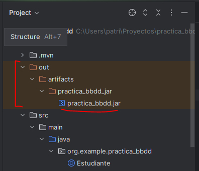

Para exportar tu aplicación JavaFX a un archivo ejecutable, como un .exe (para Windows), seguiremos los siguientes pasos.
Paso 1: Construir un archivo JAR de tu aplicación
Configura el archivo .jar:
- Ve a File > Project Structure.
- En Artifacts, haz clic en el ícono de más (+) y selecciona JAR > From modules with dependencies.
- En la ventana que aparece, selecciona el módulo que contiene tu clase principal.
- En el campo "Main Class", selecciona la clase que contiene el método main (por ejemplo, org.example.Main).
- Haz clic en OK para cerrar el cuadro de configuración.
Generar el archivo .jar:
- Ve a Build > Build Artifacts > MiApp > Build.
IntelliJ IDEA generará el archivo .jar y lo guardará en la carpeta out/artifacts.

Paso 2. Usar Launch4j.
Launch4j es una herramienta que se usa para crear ejecutables .exe para aplicaciones Java.
Descárgala aquí: Launch4j
Abre la aplicación y configura los campos como sigue:
- Jar File: Tu archivo .jar generado anteriormente.
- Output File: El nombre y la ruta del archivo .exe que deseas generar (por ejemplo, MiAplicacion.exe).
- Main Class: La clase principal de tu aplicación (por ejemplo, org.example.Main).
- Haz clic en Build Wrapper para generar el .exe.